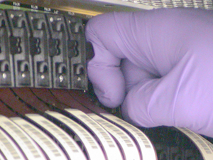

Illustration 5: Wrong Interposer and Flex Lead Installation Method

See Illustration 5, which shows the wrong method.
See Illustration 6, which shows the correct method.
Do not force the flex lead. Bent or broken pins will result.
Illustration 5: Wrong Interposer and Flex Lead Installation Method
Illustration 6: Correct Interposer and Flex Lead Installation Method
